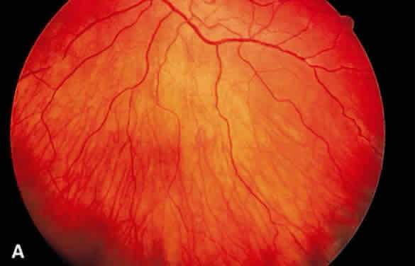
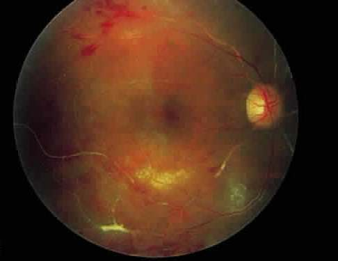
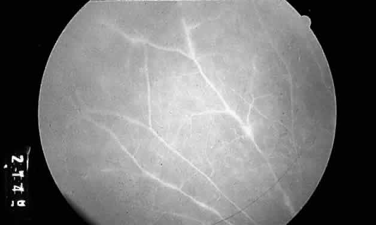

Eales' disease
* Định nghĩa:
+ Bệnh Eales.
+ Được xem là một dạng bệnh lý mạch máu tắc nghẽn vô căn ảnh hưởng chủ yếu lên vùng võng mạc khỏe mạch ở ngoại vi, hay gặp ở người trẻ. Tổn thương bao quanh và tắc nghẽn tại chổ ở mạch máu võng mạc ngoại vi nhỏ xảy ra sớm trong quá trình bệnh. Bệnh tiến triển với vùng lớn hơn không được tưới máu, lan rộng ra sau. Tân mạch có thể xảy ra, thường là ở chổ nối của võng mạc được và không được tưới máu, hậu quả là xuất huyết dịch kính.

Những đường trắng nhỏ bao quanh tĩnh mạch võng mạc

Dạng xuất tiết bọc lấy động mạch
(Trích từ Duane's Clinical Ophthalmology)
+ Bệnh này được đặt tên của Henry Eales, bác sỹ nhãn khoa, năm 1880 đã mô tả một hội chứng xuất huyết dịch kính tái diễn ở nam giới trẻ tuổi có thêm triệu chứng chảy máu mũi (epistaxis), táo bón (constipation). Ông ta đã lưu ý đến những tĩnh mach võng mạc bất thường và được cho là nguyên nhân gây xuất huyết khi gia tăng áp lực tĩnh mạch trong vì táo bón. Bác sỹ Eagle đã không quan sát mạch máu mới hoặc quá trình viêm hoặc kèm theo xuất huyết. Việc liên quan với táo bón và chảy máu mũi đã không được chứng minh trong khoảng thời gian dài và sự không được tưới máu, viêm, và tân mạch đã có liên quan đến bệnh lý này.
Không phải mọi người đều cho rằng bệnh Eales là một thực thể đặc biệt. Duke-Elder tin rằng biểu hiện lâm sàng của bệnh Eales cũng có trên nhiều bệnh khác. Kể từ đó, những tét chẩn đoán để xác định lại cho thấy rõ rằng việc gọi xuất huyết vô căn do bởi những căn nguyên được biết đến như sarcoidosis, ban đỏ hệ thống, đái tháo đường, bệnh lý hồng cầu hình liềm, và bệnh lý mạch máu collagen.
Tuy nhiên sau khi loại trừ những nguyên nhân trên, một nhóm bệnh nhân với viêm mạch và không tưới máu võng mạc ngoại vi vẫn còn. Những nhà nghiên cứu đã đồng ý rằng bệnh Eales là một thực thể riêng biệt bao gồm những đặc tính biểu hiện trên đáy mắt và chụp mạch huỳnh quang. Cho dù bệnh này được gọi viêm mạch võng mạc ngoại vi trên tĩnh mạch, nhưng gần đây chứng cứ cho thấy nó ảnh hưởng cả tĩnh mạch lẫn động mạch.

Chụp mạch huỳnh quang cho thấy những mạch máu nhuộm thuốc không bình thường. Có những vùng tổn thương bao mạch
(Trích từ Duane's Clinical Ophthalmology)